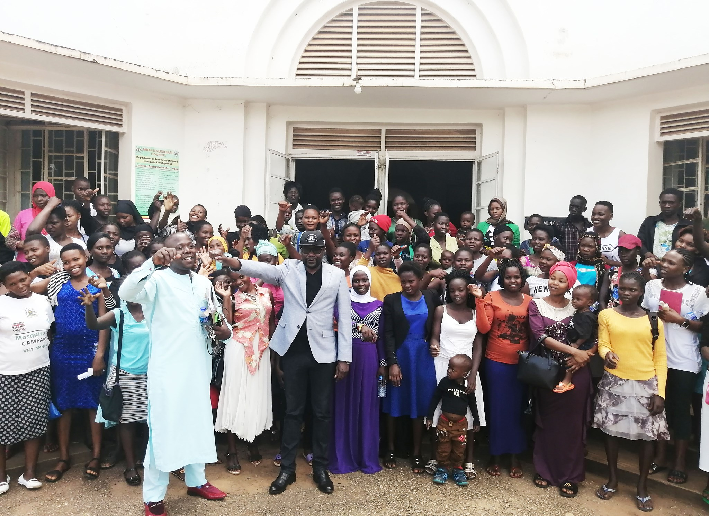
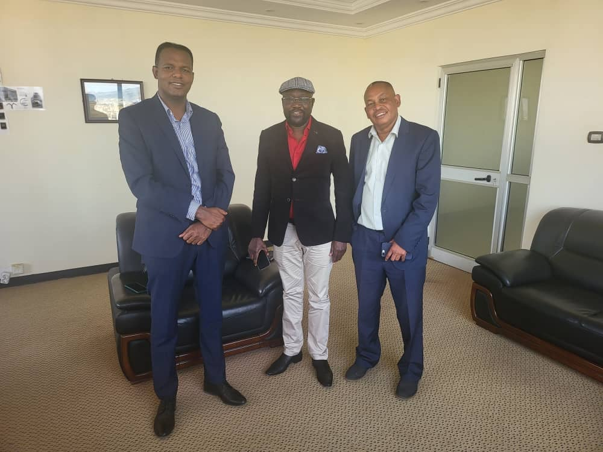

Here is a group of photos captured from various events such as launches, graduations, and talent shows.
Prof. Humphrey Oborah with Prof. Peter Anyang Nyongo(Governor of Kisumu County) and Mr. Frankline Obat Masira (CEO of Mama Grace Onyango Social Center)
6th Jan, 2023-Prof. Humphrey Oborah met Trans Nzoia Governor, George Natembeya, in his office to set the stage for the setup of the first Anthropo- Biometric Talent Clinic in Kitale.
Prof. Oborah during his press conference in South Sudan where he explained how Anthropo-Biometric Talent Machine works/ predicts careers.
On behalf of World Talent Federation, Prof.Oborah visited Monrovia, Liberia. This was to inspect the readiness of Liberia for the setup of the first Anthropo-Biometric Talent Clinic there.
February 10th,2022- Official inspection of Meru county on behalf of World Talent Federation in preparation for the first talent clinic in Meru county, Kenya.
Prof Oborah gives a captivating lecture and explanations of how the Anthropo-Biometric Machine works. He further set up /installed a new Talent Clinic in Eldoret Town, Kenya.

Finally, Anthropo-Biometric Talent Clinic in Kampala, Uganda.

Prof. Humphrey Oborah hosted by Capt. Lemy Abera of National Aviation Institute in Addis Ababa (Ethiopia), when the professor paid him a courtesy call at his office (Friday, 4th Feb.2022). This is during the official inspection of the institution on behalf of the World Talent Federation, to host the first Talent Clinic in Ethiopia.
Juba, Wed 14 Dec 2022- Prof Humphrey Oborah meets South Sudan Vice President, Hussein Abdelbagi Akol Agany ( and other senior government officials).
25th October 2022, Prof. Oborah met with Meru County Deputy Governor- Mr. Isaac Mutuma. They talked about the complete setup of Ksh.17M first Anthropo-Biometric Talent Clinic in Meru.